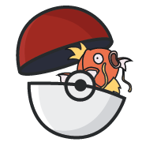
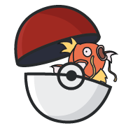

Hi! I'm Hannah.
UX Designer by day
and by night (and sometimes day):
Video Creator
World Traveler

Pokemon Player
Survivor Superfan
Video Creator
World Traveler
Pokemon Player
Survivor Superfan

I'm currently a UX Designer for Wellmark Blue Cross Blue Shield, a large healthcare insurance company in the midwest.
With my team, I'm improving the design and flow of a new feature to help insurance agents, employers, and employees work more collaboratively. I was able to analyze data from user interviews, unmoderated usability tests, and A/B tests to understand the problem and validate the designs on 3 different applications.
I'm also using my writing skills to create project management documentation to improve the efficiency the pre-project approval process.
As the design associate for the first Techstars Iowa cohort, I mastered time management, task prioritzation, and the presentation of designs and findings to clients by working 10 start-ups at once.
Most of my work comprised of UI design, animation, or presentation design.
I'm most proud of the data visualization I made for Neolth student mental health mobile and web app that combines vizulation for qualitative and quantitative data to help students see their month-to-month mental health progress. I was even able to get my design validated by a panel of students that use the app!
I graduated from Iowa State University in May 2020 with a major in technical communication and a minor in digital media. My major help learn more about human computer interaction, audience analysis, and writing.
My internship at the Iowa Dot is where I got my first exposure to using user research to validate and solve design problems by using qualitative surveys results and Google Analytics to inform my design choices.
I also grew public speaking skills by giving many design or writing related lectures as the TA for a technical communication course, the president of Society for Technical Communication, and a presentor at two STEM conferences for middle school girls.
Strengthsfinder Top 5:
Hannah is my go-to-girl. If I needed something knocked out quickly and done right the first time, I would assign it to Hannah. While she is the youngest and the least experienced team member, she does have a robust design process and follows directions. She listens and writes down what needs to happen, then, more importantly, executes those directions. If you ask her how long she needs to deliver, she never takes longer than she estimates either; Hannah always has on time or early work. In addition, she fosters relationships with the stakeholders and other team members. Her work product is always on point, and she is always thinking, "how can I improve this to make it a better experience for the audience" not just the user, but also the viewer of the wireframes. She is one of the most valuable assets that we have in the Wellmark UX team.
~ Charity Jantzen, UX Lead at Wellmark
Hannah helped us with multiple design projects, including presentation decks, logos, and user interface design for our application. Hannah’s work is exceptional and she truly has an amazing eye for design. She really takes the time to understand the user experience needs, and is extremely thoughtful in crafting her approach. Serving as the designer for the whole Techstars cohort is a daunting task, with dozens of design projects running simultaneously and in an accelerated fashion. Hannah pulled off managing this incredible workload with both ease and poise. I truly enjoyed working with Hannah, her designs are incredible, and wholeheartedly recommend her! You rock Hannah!
~ Parker Schlank, CEO & Cofounder at Tempore
Hannah has such a diverse repertoire of design skills. Through the Techstars Iowa program, we were lucky to have Hannah help us create an animated introduction for Civic Champs. She led us through that process end-to-end including storyboarding, design, and the final animation. In addition, I have been really impressed by the work she has done for other companies in our cohort including graphic design for pitch decks, icons, zoom backgrounds, etc. It’s rare to find a creative who can design, craft story, and understands the technical work involved for video creation. Hannah is the total package!
~ Geng Wang, CEO at Civic Champs
Hannah has a great design eye and skillset to compliment. She understood what we were trying to achieve. Taking our random thoughts, she turned them into actual product imagery. Any design team would be lucky to have Hannah as an addition.
~ Jon Lensing, CEO at OpenLoop
Hannah is a talented designer and all around great person! She helped us complete a product redesign quickly and beautifully. Her work enabled us to reach our program goal of launching Version 2.0 of our product. I highly recommend her for design projects.
~ Katherine Grill, CEO & Cofounder at Neolth